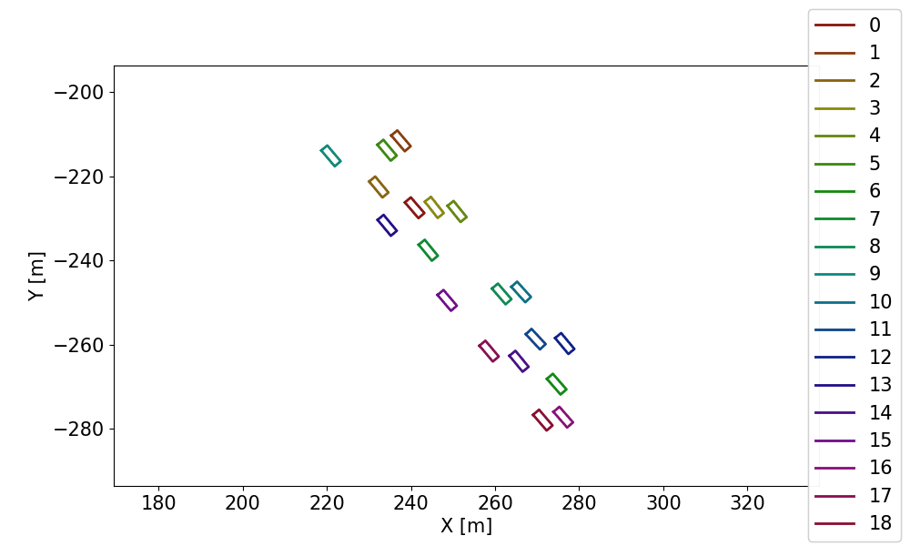
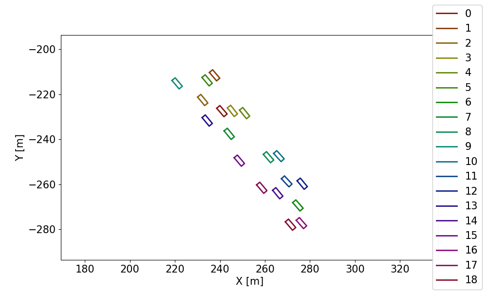

Yu Lin
(He/Him)Hi there partner!
About Me
I am a data-driven professional with a strong background in data science and engineering, specializing in identifying and unlocking value through data-driven solutions. My expertise lies in analyzing complex datasets to solve current and potential future problems, and in discovering ways to enhance products and business processes through data. I possess superb learning skills, allowing me to quickly and deeply grasp new concepts, whether independently or with guidance, and effectively translate newly acquired knowledge into actionable production solutions. I posses strength in leveraging data to drive strategic decision-making and create impactful results for organizations. I am eager to apply my skills in diverse industries where data plays a crucial role in innovation and growth.
Experiences
Lead System Engineer, Powertrain Data
Lucid Motors, Newark, CA - Mar. 2021 – Jan. 2024
- Founded and led the Powertrain Data Team, expanding it from a one-person operation to a robust team of seven data engineers and data scientists.
- Designed and implemented a scalable data management system on AWS using Apache Spark and Apache Airflow, reducing data retrieval times significantly.
- Developed and deployed a machine learning-based anomaly detection model, enhancing early defect detection and preventing potential recalls.
- Conducted in-depth analysis of large-scale drive unit manufacturing data, delivering actionable insights that drove continuous improvement strategies.
Research Engineer II at NHTSA Vehicle Research and Test Center (VRTC)
Transportation Research Center Inc., East Liberty, OH - Oct. 2019 – Feb. 2021
- Developed a suite of data processing and analysis tools for autonomous driving research, advancing VRTC’s safety research capabilities.
- Created traffic scenario models and extraction algorithms using machine learning, establishing a framework for generating autonomous driving test scenarios.
Personal Projects
Transformer Based Mental Health Classification
A transformer encoder based deep learning model for mental health text classification.
Constrained-Forward-Dynamic-Simulation-of-Multi-Links
Study of different numerical methods on dynamics systems.
NASCAR Battles Telemetry Extraction
Automated NASCAR race battles extraction from telemetry using clustering algorithms.
 

Skills
Programming Languages
Python, SQL, MATLAB/Simulink
Data Tools
Pandas, Docker, ETL, Tableau, Grafana
Big Data Technologies
Apache Spark, Apache Airflow, Apache Iceberg
Machine Learning
Scikit-Learn, PyTorch, XGBoost, LLM, NLP
Cloud & DevOps
Amazon Web Services (AWS), Git, Gitlab-CI/CD
Databases
PostgreSQL, InfluxDB, Trino/Presto
Leadership
Proven ability to lead teams and manage projects
Mentorship
Experienced in mentoring junior engineers
Team Building
Successfully built and expanded teams
Cross-Team Collaboration
Skilled in working across departments
Communication
Strong verbal and written communication skills
Problem Solving
Proficient in identifying and addressing challenges